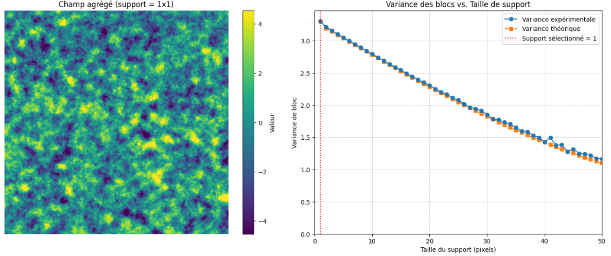
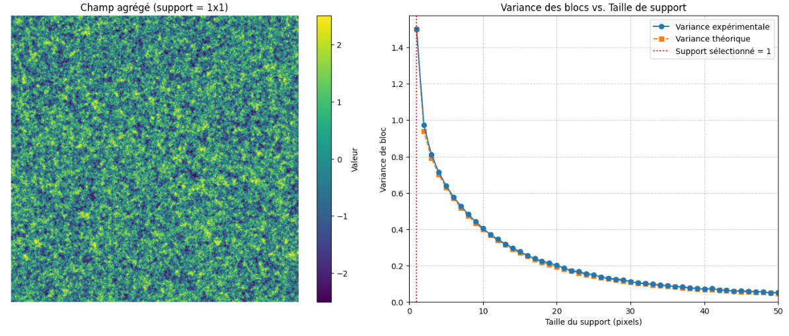
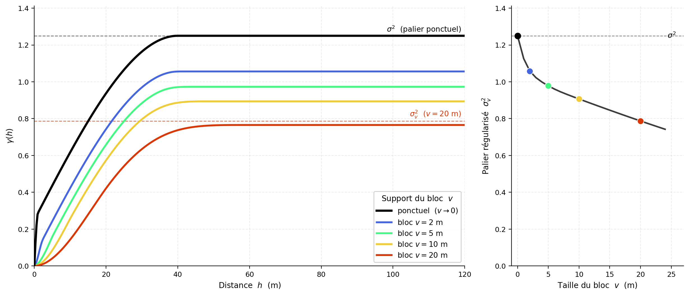
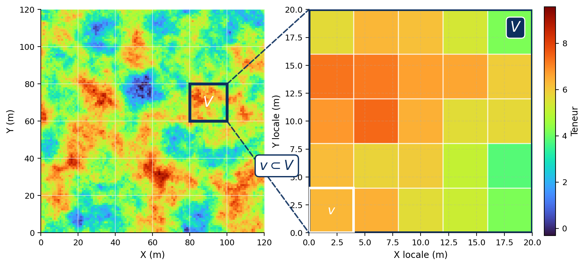
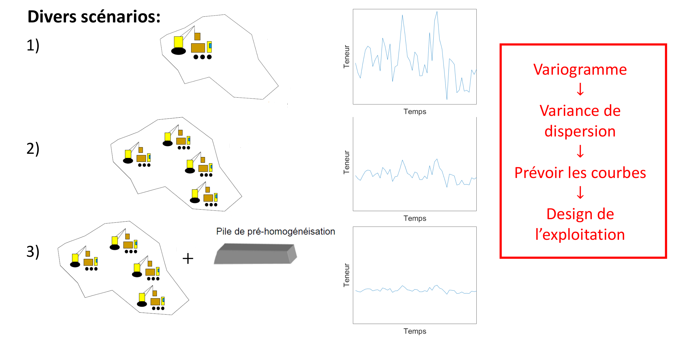
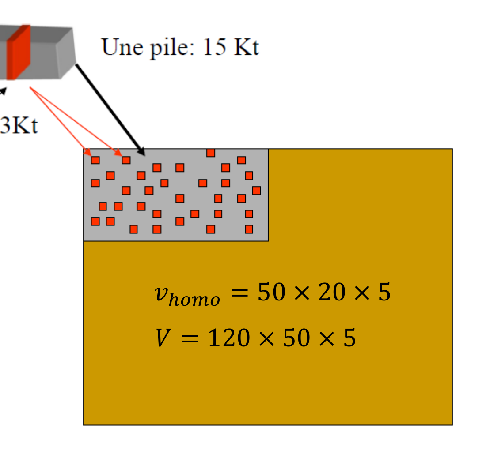
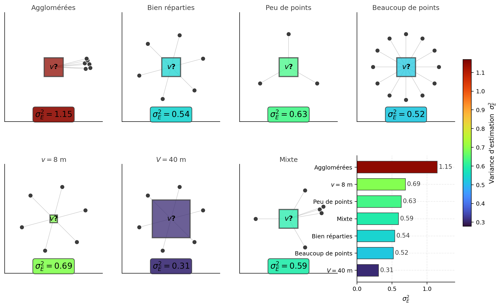
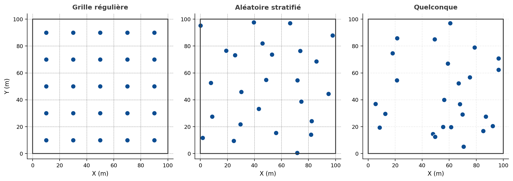
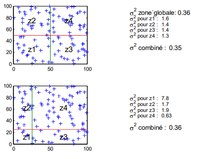

8 Variance de blocs, de dispersion et d’estimation
Ce chapitre présente la variance de bloc, la variance de dispersion et la variance d’estimation. Il vise à montrer comment la variabilité des teneurs évolue lorsque l’analyse porte non plus uniquement sur des échantillons ponctuels, mais également sur des blocs, des panneaux ou des volumes de plus grande taille. À partir du variogramme, cette variabilité peut être reliée à la continuité spatiale du gisement et quantifiée au moyen de différents calculs, parfois réalisés à l’aide d’abaques. Ces notions sont ensuite mobilisées pour examiner des problèmes plus pratiques, notamment l’homogénéisation du minerai, la variabilité du matériau envoyé au concentrateur et l’effet de la configuration de l’échantillonnage.
À la fin de ce chapitre, vous serez en mesure de :
Comprendre les notions de variance de bloc et de variance de dispersion et décrire le lien avec le variogramme et la continuité spatiale qu’il exprime;
Calculer les variances de bloc et variances de dispersion avec les abaques ;
Effectuer la sélection de la meilleure alternative pour homogénéiser le minerai ;
Recommander un sens de déplacement d’une pelle dans une mine pour minimiser la variabilité au concentrateur ;
Prévoir l’impact sur la variabilité au concentrateur d’exploiter simultanément différentes portions du gisement ;
Comprendre la notion de variance d’estimation;
Calculer des variances d’estimation pour une configuration d’estimation et le modèle de variogramme;
Identifier le lien entre patron d’échantillonnage et l’anisotropie du variogramme.
Ce chapitre s’appuie principalement sur les ouvrages suivants :
Chilès, J., & Delfiner, P. (2012). Geostatistics: Modeling Spatial Uncertainty. John Wiley & Sons.
Journel, A. G., & Huijbregts, C. J. (1978). Mining Geostatistics. Academic Press.
8.1 Définitions
Le variogramme quantifie la variabilité spatiale d’une variable régionalisée. À partir de cet outil, trois types de variances peuvent être calculés. Elles jouent un rôle important dans la compréhension et la gestion de l’hétérogénéité d’un gisement.
Variance de bloc (\(\sigma_V^2\)) : mesure la variabilité des teneurs moyennes de blocs de volume \(V\) dans un domaine théoriquement infini. Elle permet de quantifier l’effet de support, c’est-à-dire la diminution de la variabilité lorsque l’on passe d’un échantillon ponctuel à un volume plus grand.
Variance de dispersion (\(D^2(v\mid V)\)) : représente la variabilité des petits blocs \(v\) à l’intérieur d’un volume fini \(V\). Elle met en évidence l’hétérogénéité interne d’un ensemble, par exemple un panneau, un tas ou une pile de minerai.
Variance d’estimation (\(\sigma_e^2\)) : exprime l’incertitude associée à l’estimation de la teneur moyenne d’un bloc. Elle dépend notamment de l’espacement et de la configuration des données, du volume estimé et du modèle de variogramme utilisé.
8.2 Variances de blocs
Jusqu’à présent, le variogramme a été considéré sur un support quasi ponctuel, correspondant au volume d’une carotte ou d’un composite. Ce support n’est pas réellement ponctuel, mais il peut être approximé comme tel lorsqu’il est très petit par rapport aux dimensions des blocs et aux échelles de continuité du gisement.
Le support d’exploitation est toutefois beaucoup plus grand. Dans une mine, les décisions portent généralement sur des blocs de dimensions significatives, par exemple \(5\ \text{m}\times5\ \text{m}\times5\ \text{m}\). Il faut donc passer du support des données au support des blocs : c’est le changement de support.
La question est alors la suivante : comment utiliser le variogramme établi à partir des données pour quantifier la variabilité des teneurs moyennes des blocs?
Deux notions complémentaires interviennent :
Variance de bloc : décrit la variabilité des teneurs moyennes de blocs de support \(v\) dans un domaine stationnaire théoriquement infini. Elle correspond à \(D^2(v\mid\infty)\) et n’est définie au sens strict que lorsque la variance globale est finie, donc lorsque le variogramme possède un palier.
Variance de dispersion : décrit la variabilité des petites unités de support \(v\) à l’intérieur d’un volume fini \(V\). Elle correspond à \(D^2(v\mid V)\) et peut être calculée même lorsque le variogramme ne possède pas de palier.
Ces notions interviennent notamment dans :
- l’évaluation des réserves récupérables;
- l’analyse des piles d’homogénéisation;
- l’étude de la variabilité de la production;
- le calcul des variances d’estimation.
Définition de la teneur d’un bloc
Soit \(Z(\mathbf{x})\) une fonction aléatoire définie au support ponctuel. Considérons un support \(v\) centré à la position \(\mathbf{x}\), noté \(v_{\mathbf{x}}\).
La teneur moyenne du bloc est :
\[ Z_v(\mathbf{x}) = \frac{1}{|v|} \int_{v_{\mathbf{x}}} Z(\mathbf{u})\,d\mathbf{u}, \]
où \(|v|\) représente le volume, l’aire ou la longueur du support, selon la dimension du problème.
Cette relation indique que la teneur du bloc est la moyenne des valeurs ponctuelles qui le composent.
Sous stationnarité d’ordre 2, l’espérance est conservée lors du changement de support :
\[ \mathbb{E} \left[ Z_v(\mathbf{x}) \right] = m. \]
Variance de bloc
La variance de bloc est la variance des teneurs moyennes de blocs de support \(v\) dans un domaine théoriquement infini :
\[ \sigma_v^2 = D^2(v\mid\infty) = \operatorname{Var} \left[ Z_v(\mathbf{x}) \right]. \]
En remplaçant \(Z_v(\mathbf{x})\) par sa définition, on obtient :
\[ \sigma_v^2 = \operatorname{Var} \left[ \frac{1}{|v|} \int_{v_{\mathbf{x}}} Z(\mathbf{u})\,d\mathbf{u} \right]. \]
Sous stationnarité d’ordre 2 :
\[ \sigma_v^2 = \frac{1}{|v|^2} \iint_{v_{\mathbf{x}}\times v_{\mathbf{x}}} C(\mathbf{u}-\mathbf{u}') \,d\mathbf{u}\,d\mathbf{u}'. \]
La variance d’un bloc est donc la covariance moyenne entre toutes les paires de points appartenant au bloc.
Covariance et variogramme moyens
Pour deux supports \(A\) et \(B\), la covariance moyenne est définie par :
\[ \overline{C}(A,B) = \frac{1}{|A|\,|B|} \iint_{A\times B} C(\mathbf{x}-\mathbf{y}) \,d\mathbf{x}\,d\mathbf{y}. \]
De manière analogue, le variogramme moyen est :
\[ \overline{\gamma}(A,B) = \frac{1}{|A|\,|B|} \iint_{A\times B} \gamma(\mathbf{x}-\mathbf{y}) \,d\mathbf{x}\,d\mathbf{y}. \]
La variance de bloc s’écrit donc simplement :
\[ \sigma_v^2 = \overline{C}(v,v). \]
Lorsque le variogramme possède un palier \(C(\mathbf{0})=\sigma^2\), la variance de bloc peut aussi être calculée à partir du variogramme ponctuel :
\[ \sigma_v^2 = \sigma^2 - \overline{\gamma}(v,v). \]
Autrement dit :
\[ \sigma_v^2 = \sigma^2 - \frac{1}{|v|^2} \iint_{v\times v} \gamma(\mathbf{u}-\mathbf{u}') \,d\mathbf{u}\,d\mathbf{u}'. \]
Le terme \(\overline{\gamma}(v,v)\) représente la variabilité moyenne à l’intérieur du bloc. Cette variabilité est moyennée lors du passage du support ponctuel au support de bloc; elle est donc retranchée de la variance ponctuelle.
La variance de bloc dépend :
- de la taille du support;
- de sa forme;
- de son orientation;
- du modèle de variogramme;
- de l’anisotropie.
Deux blocs de même volume peuvent ainsi présenter des variances différentes s’ils n’ont pas la même géométrie ou la même orientation par rapport aux directions de continuité.
Exemple 1 — Modèle sphérique
La Figure 8.1 compare la variance de bloc mesurée sur un grand champ simulé à la variance calculée à partir du variogramme ponctuel.
Le modèle utilisé est sphérique et isotrope, avec une portée de 15 pixels, un palier total unitaire et aucun effet de pépite.
Les deux courbes sont très proches. Les écarts résiduels proviennent de la taille finie du champ simulé et de l’approximation numérique des intégrales.

Exemple 2 — Modèle exponentiel avec effet de pépite
La Figure 8.2 présente le même exercice pour un modèle exponentiel isotrope comprenant :
- une portée effective de 50 pixels;
- un palier structuré \(C_1=1\);
- un effet de pépite \(C_0=0{,}5\);
- une variance ponctuelle totale \(C(\mathbf{0})=1{,}5\).
La variance diminue rapidement lorsque le support augmente. La composante de pépite est particulièrement atténuée par le moyennage, puisqu’elle représente une variabilité sans continuité entre des positions distinctes.
Dans une simulation discrète, la contribution résiduelle de la pépite dépend du nombre d’éléments indépendants moyennés dans chaque bloc et de la discrétisation utilisée.

Propriétés
Lorsque le support du bloc tend vers le support ponctuel :
\[ \lim_{|v|\to0} \sigma_v^2 = \sigma^2. \]
La variance de bloc tend alors vers la variance ponctuelle.
Lorsque la taille du bloc augmente, la variance diminue. Si la covariance décroît suffisamment avec la distance et si le domaine moyenné devient très grand :
\[ \lim_{|v|\to\infty} \sigma_v^2 = 0. \]
Ces limites ne découlent pas simplement du fait que le variogramme est croissant. Elles supposent une fonction aléatoire stationnaire de variance finie et une dépendance spatiale qui s’atténue à grande distance.
L’augmentation du support agit donc comme un lissage spatial : les valeurs fortes et faibles sont moyennées, ce qui réduit la variabilité entre les blocs.
Variogramme de blocs
Considérons deux blocs identiques de support \(v\), centrés aux positions \(\mathbf{x}\) et \(\mathbf{x}+\mathbf{h}\).
Le variogramme de blocs est défini par :
\[ \gamma_v(\mathbf{h}) = \frac{1}{2} \operatorname{Var} \left[ Z_v(\mathbf{x}+\mathbf{h}) - Z_v(\mathbf{x}) \right]. \]
Il mesure la variabilité entre les teneurs moyennes de deux blocs, plutôt qu’entre deux valeurs ponctuelles.
La covariance entre les deux blocs est :
\[ C_v(\mathbf{h}) = \frac{1}{|v|^2} \iint_{v\times v} C \left( \mathbf{h} + \mathbf{u}'-\mathbf{u} \right) \,d\mathbf{u}\,d\mathbf{u}'. \]
Sous stationnarité d’ordre 2 :
\[ \gamma_v(\mathbf{h}) = C_v(\mathbf{0}) - C_v(\mathbf{h}). \]
Comme \(C_v(\mathbf{0})=\sigma_v^2\), le palier du variogramme de blocs correspond à la variance de bloc lorsque la covariance entre blocs tend vers zéro à grande distance.
En fonction du variogramme ponctuel, le variogramme de blocs s’écrit :
\[ \gamma_v(\mathbf{h}) = \overline{\gamma} \left( v_{\mathbf{x}}, v_{\mathbf{x}+\mathbf{h}} \right) - \overline{\gamma}(v,v). \]
Le premier terme est la moyenne du variogramme ponctuel entre toutes les paires dont un point appartient au premier bloc et l’autre au second. Le deuxième terme est la moyenne du variogramme à l’intérieur d’un bloc.
Cette soustraction est essentielle. Elle garantit notamment que :
\[ \gamma_v(\mathbf{0}) = 0. \]
Le variogramme de blocs (Figure 8.3) possède généralement :
- un palier plus faible que le variogramme ponctuel;
- une croissance plus progressive à courte distance;
- une forme dépendant de la taille, de la géométrie et de l’orientation des blocs.

🧮 Atelier interactif 8.1 — Variance de bloc
Un champ anisotrope est simulé à partir de portées, d’un palier, d’un effet de pépite et d’un angle réglables. En augmentant le support, observez le lissage du champ et la diminution de la variance de bloc. La variance empirique, calculée par moyennage glissant, est comparée à la variance théorique obtenue à partir de la covariance moyenne.
8.3 Variance de dispersion
La variance de bloc permet de calculer la variance théorique d’une teneur de bloc dans un domaine supposé très grand. En pratique, un gisement est toujours fini. On veut donc aussi connaître l’amplitude des variations de teneur à l’intérieur d’un volume donné, par exemple une zone du gisement, un panneau ou une période de production.
Considérons un grand bloc \(V_j\) découpé en petits blocs \(v_i\). On a :
\[ Z(V_j) = \frac{1}{n} \sum_{i=1}^n Z(v_i) \]
La teneur du grand bloc \(V_j\) est donc la moyenne des teneurs des petits blocs \(v_i\) qui le composent (Figure 8.4). On peut ensuite regarder à quel point les teneurs des petits blocs varient autour de cette moyenne. Cette variabilité, calculée en moyenne sur tous les blocs \(V_j\) du domaine, correspond à la variance de dispersion de \(v\) dans \(V\), notée \(D^2(v \mid V)\).

Soit la variance des petits blocs à l’intérieur d’un bloc \(V_j\) :
\[ s^2_{v|V_j} = \frac{1}{n} \sum_{i=1}^n \left( Z(v_i) - Z(V_j) \right)^2 \]
Cette expression mesure la variabilité des teneurs des petits blocs \(v_i\) autour de la teneur moyenne du grand bloc \(V_j\). Comme on peut faire ce calcul pour plusieurs blocs \(V_j\) dans le gisement, la variance de dispersion est définie comme la moyenne de cette quantité sur l’ensemble des blocs :
\[ D^2(v \mid V) = \mathbb{E}_{V_j}\left[ s^2_{v|V_j} \right] = \mathbb{E}_{V_j}\left[ \frac{1}{n} \sum_{i=1}^n \left( Z(v_i) - Z(V_j) \right)^2 \right] \]
Variance de dispersion — Démonstration complète
Soit un bloc \(V_j\) composé de \(n\) sous-blocs \(v_i\). On part de la variance des petits blocs autour de la moyenne du grand bloc :
\[ s^2_{v|V_j} = \frac{1}{n} \sum_{i=1}^n \left( Z(v_i) - Z(V_j) \right)^2 \]
avec :
\[ Z(V_j) = \frac{1}{n} \sum_{i=1}^n Z(v_i) \]
On développe le carré :
\[ \left( Z(v_i) - Z(V_j) \right)^2 = Z(v_i)^2 - 2Z(v_i)Z(V_j) + Z(V_j)^2 \]
En remplaçant dans la somme et en utilisant le fait que \(Z(V_j)\) est la moyenne des \(Z(v_i)\), on obtient :
\[ s^2_{v|V_j} = \frac{1}{n} \sum_{i=1}^n Z(v_i)^2 - Z(V_j)^2 \]
On prend ensuite l’espérance sur l’ensemble des blocs \(V_j\) :
\[ \mathbb{E}*{V_j} \left[ s^2*{v|V_j} \right] = \frac{1}{n} \sum_{i=1}^n \mathbb{E}[Z(v_i)^2] \mathbb{E}[Z(V_j)^2] \]
En utilisant :
\[ \mathbb{E}[X^2] = \operatorname{Var}(X) + (\mathbb{E}[X])^2 \]
on obtient :
\[ \mathbb{E}*{V_j} \left[ s^2*{v|V_j} \right] = \frac{1}{n} \sum_{i=1}^n \left( \operatorname{Var}(Z(v_i)) + m^2 \right) \left( \operatorname{Var}(Z(V_j)) + m^2 \right) \]
Les termes en \(m^2\) s’annulent, car les petits blocs et les grands blocs ont la même moyenne sous l’hypothèse de stationnarité. Il reste :
\[ \mathbb{E}*{V_j} \left[ s^2*{v|V_j} \right] = \frac{1}{n} \sum_{i=1}^n \operatorname{Var}(Z(v_i)) \operatorname{Var}(Z(V_j)) \]
Si les sous-blocs \(v_i\) ont le même support, alors :
\[ \operatorname{Var}(Z(v_i)) = \operatorname{Var}(Z(v)) \]
et :
\[ \operatorname{Var}(Z(V_j)) = \frac{1}{n^2} \sum_{i=1}^n \sum_{k=1}^n \operatorname{Cov}(Z(v_i), Z(v_k)) \]
On obtient donc :
\[ \mathbb{E}*{V_j} \left[ s^2*{v|V_j} \right] = \operatorname{Var}(Z(v)) = \frac{1}{n^2} \sum_{i=1}^n \sum_{k=1}^n \operatorname{Cov}(Z(v_i), Z(v_k)) \]
Le premier terme correspond à la variance des petits blocs. Le second terme correspond à la variance des grands blocs, puisque \(V_j\) est formé par la moyenne des \(v_i\). On peut donc écrire :
\[ D^2(v \mid V) = \bar{C}(v,v) - \bar{C}(V,V) \]
et, avec le variogramme :
\[ D^2(v \mid V) = \bar{\gamma}(V,V) - \bar{\gamma}(v,v) \]
Conclusion : la variance de dispersion est la différence entre la variance des petits blocs et celle des grands blocs.
Ainsi, la variance de dispersion s’écrit simplement :
\[ D^2(v \mid V) = \sigma_v^2 - \sigma_V^2 \]
Autrement dit, elle mesure la part de variabilité qui existe à l’échelle des petits blocs \(v\), mais qui disparaît lorsqu’on passe au grand bloc \(V\). Comme la variance de bloc a déjà été définie, la variance de dispersion se calcule directement par différence.
Expressions équivalentes
Utilisant les résultats précédents concernant les variances de blocs, on peut obtenir les formulations suivantes :
\[ D^2(v \mid V) = \bar{C}(v,v) - \bar{C}(V,V) \]
ou encore, en termes de variogramme :
\[ D^2(v \mid V) = \bar{\gamma}(V,V) - \bar{\gamma}(v,v) \]
Propriétés
On peut retenir trois cas limites :
- si \(v \to 0\), alors \(D^2(v \mid V) \to \bar{\gamma}(V,V)\) ;
- si \(v \to V\), alors \(D^2(v \mid V) \to 0\) ;
- si \(V \to \infty\), alors \(D^2(v \mid V) \to \sigma_v^2\).
Le deuxième cas est le plus intuitif : si le petit support devient identique au grand support, il n’y a plus de dispersion à mesurer entre les deux.
Applications
Dans une mine, \(v\) peut représenter la production d’une journée, alors que \(V\) peut représenter une semaine ou un mois. La variance de dispersion sert alors à voir si les teneurs envoyées au concentrateur varient beaucoup d’une journée à l’autre. Si les teneurs changent trop rapidement, le procédé devient plus difficile à contrôler. Une alimentation plus régulière permet au contraire de mieux stabiliser le traitement et, idéalement, d’améliorer la récupération \(y\). Dans la logique de Lane, cette récupération influence directement la valeur économique de l’exploitation.
Additivité des dispersions
Les variances de dispersion peuvent s’additionner quand les supports sont emboîtés. C’est la relation de Krige. Si on passe d’un petit support \(v_1\) à un grand support \(v_n\), avec des supports intermédiaires de plus en plus grands, on peut écrire :
\[ D^2(v_1 \mid v_n) = D^2(v_1 \mid v_2) + D^2(v_2 \mid v_3) + \dots + D^2(v_{n-1} \mid v_n) \]
où les supports sont ordonnés de \(v_1\) à \(v_n\) et inclus les uns dans les autres.
Cette relation dit simplement que la variabilité entre \(v_1\) et \(v_n\) peut être séparée en plusieurs morceaux. On regarde d’abord ce qui est perdu en passant de \(v_1\) à \(v_2\), puis de \(v_2\) à \(v_3\), et ainsi de suite. Au final, la somme de ces pertes donne la dispersion totale entre le petit support et le grand support.
Exemple pratique : piles de stockage
Cette relation est utile pour représenter l’effet d’une pile d’homogénéisation. On peut, par exemple, considérer :
- \(v_1\) : la production journalière ;
- \(v_2\) : une pile de stockage ou une production homogénéisée ;
- \(v_3\) : l’alimentation mensuelle du concentrateur.
La pile agit comme un mélangeur. Elle réduit les variations de teneur entre les journées. Si l’homogénéisation est très efficace, la teneur fournie par la pile varie peu d’une journée à l’autre. Dans ce cas, la dispersion entre \(v_1\) et \(v_2\) devient faible :
\[ D^2(v_1 \mid v_2) \approx 0 \]
La variabilité journalière est alors presque absorbée par la pile. Il reste surtout la variabilité entre les piles ou entre les volumes alimentant le concentrateur sur une plus longue période :
\[ D^2(v_1 \mid v_3) \approx D^2(v_2 \mid v_3) \]
En pratique, cela veut dire que la pile ne change pas la teneur moyenne du minerai, mais elle réduit les fluctuations à court terme. C’est ce qui permet d’envoyer une alimentation plus stable au concentrateur.
Notes importantes concernant l’effet de pépite
Dans les relations précédentes, \(\gamma(\mathbf{h})\) représente le variogramme ponctuel. Dans la pratique, ce variogramme n’est pas accessible : seul le variogramme défini sur un support « \(s\) » existe (par exemple, les carottes de forage). Les relations restent valides tant que le support des données est inférieur à « \(v\) ». Dans ce cas, l’effet de pépite n’intervient ni dans le calcul de la variance de bloc ni dans celui de la variance de dispersion.
Lorsque \(v\) est proche du support des données, l’effet de pépite ne disparaît pas complètement dans la variance de bloc. On ajoute alors souvent un terme de la forme \(\frac{C_0}{n}\), où \(C_0\) est l’effet de pépite et \(n\) le nombre de supports élémentaires dans le bloc. Plus il y a de supports dans le bloc, plus la pépite est moyennée. Pour un petit bloc, ce terme peut donc rester non négligeable.
Remarque finale
Le calcul des variances de bloc et de la variance d’estimation ne nécessite pas de connaître explicitement les données. Seul le variogramme est requis. Ces notions ne rendent donc pas compte de l’information accrue localement, issue de l’acquisition de nouvelles données.
🧮 Atelier interactif 8.2 — Influence du modèle de variogramme
Trois modèles de variogramme partageant une variance globale comparable mais des structures spatiales différentes sont confrontés : un sphérique (pépite + structure), un modèle imbriqué à deux portées (sans pépite, mais avec une composante de courte distance) et un sphérique indépendant. Pour chacun, observez côte à côte le variogramme, la variance de bloc en fonction de la taille, et la dispersion \(\mathrm{Var}(l\times l) - \mathrm{Var}(\text{bloc de référence})\). À palier voisin, le modèle qui place davantage de variance à courte distance produit une variance de bloc et une dispersion plus fortes : le choix du modèle, au-delà de la portée et du palier, conditionne la variance de dispersion calculée.
8.4 Application de la variance de dispersion : Homogénéité du minerai
La variance de dispersion mesure la variabilité des teneurs d’un support \(v\) à l’intérieur d’un volume plus grand \(V\). Appliquée à la production, elle quantifie directement l’homogénéité du minerai livré au concentrateur : \(v\) représente la teneur d’une unité de production (par exemple une journée) et \(V\) l’ensemble alimenté sur une période (par exemple un mois). Plus \(D^2(v \mid V)\) est faible, plus la teneur envoyée au concentrateur est stable d’une journée à l’autre.
Cette stabilité a une valeur économique. Un concentrateur est réglé pour une teneur d’alimentation donnée ; si celle-ci fluctue, il faut ajuster continuellement le procédé, le rendement se dégrade et l’on perd du métal et de l’argent. L’intérêt de la variance de dispersion est qu’elle permet d’anticiper ces fluctuations et de comparer des stratégies d’exploitation avant de démarrer, à partir du seul variogramme :
\[ \text{variogramme} \;\rightarrow\; \text{variance de dispersion} \;\rightarrow\; \text{prévision des fluctuations} \;\rightarrow\; \text{design de l'exploitation.} \]

Exemple : comparer quatre stratégies d’exploitation
On cherche à minimiser les fluctuations de la teneur quotidienne sur un mois d’exploitation d’un panneau de 90 Kt (\(120 \times 50 \times 5\) m). La production quotidienne est de 3 Kt (\(20 \times 10 \times 5\) m), le banc fait 5 m, et le variogramme est connu : sphérique isotrope, de portée \(a_x = a_y = 50\) m et de palier \(C = 5\,\%^2\).
On compare quatre stratégies : (1) une seule pelle, (2) deux pelles indépendantes, (3) une pile d’homogénéisation de 15 Kt, (4) une pile d’homogénéisation de 90 Kt.
Dans chaque cas, on évalue la variance de dispersion du bloc quotidien \(v\) dans le panneau mensuel \(V\),
\[ D^2(v \mid V) = \sigma_v^2 - \sigma_V^2 = C\,\big[\, F(V) - F(v) \,\big], \]
où \(F(\cdot)\) est la fonction auxiliaire du modèle sphérique — la valeur standardisée \(\bar{\gamma}/C\) du variogramme moyen sur un support, lue sur l’abaque en fonction des dimensions du support rapportées à la portée.
Scénario 1 — une pelle
Toute la production d’une journée provient d’un même bloc \(v = 20 \times 10 \times 5\). On lit sur l’abaque \(F(120/50,\,50/50) = 0{,}83\) pour le panneau mensuel et \(F(20/50,\,10/50) = 0{,}24\) pour le bloc quotidien :
\[ D^2(v \mid V) = 5\,\%^2 \times (0{,}83 - 0{,}24) = 2{,}95\,\%^2. \]
Scénario 2 — deux pelles indépendantes
La production quotidienne est maintenant partagée entre deux pelles distantes de 60 m, chacune extrayant un demi-bloc \(v_1 = v_2 = 10 \times 10 \times 5\) (1,5 Kt) dans sa propre zone \(V_1 = V_2 = 60 \times 50 \times 5\) (45 Kt). La teneur quotidienne est la moyenne des deux pelles, \(Z(v) = \tfrac{1}{2}\big(Z(v_1) + Z(v_2)\big)\), d’où
\[ \operatorname{Var}\!\big(Z(v)\big) = \tfrac{1}{4}\Big(\operatorname{Var}\!\big(Z(v_1)\big) + \operatorname{Var}\!\big(Z(v_2)\big) + 2\operatorname{Cov}\!\big(Z(v_1), Z(v_2)\big)\Big). \]
Les deux pelles étant séparées de 60 m, soit plus que la portée de 50 m, leurs teneurs sont décorrélées : \(\operatorname{Cov}\!\big(Z(v_1), Z(v_2)\big) = 0\). Comme les deux blocs ont la même variance, il reste \(\operatorname{Var}\!\big(Z(v)\big) = \tfrac{1}{2}\operatorname{Var}\!\big(Z(v_1)\big)\) : moyenner deux teneurs indépendantes réduit de moitié la variance du bloc quotidien. La dispersion se calcule alors sur la zone propre à une pelle (\(V_1 = 60 \times 50 \times 5\)) :
\[ D^2(v \mid V) = \tfrac{1}{2}\Big(5\,\%^2 \times \big(F(60/50,\,50/50) - F(10/50,\,10/50)\big)\Big) = \tfrac{1}{2}\big(5\,\%^2 \times (0{,}70 - 0{,}16)\big) = 1{,}35\,\%^2. \]
Scénario 3 — pile d’homogénéisation de 15 Kt
Une pile d’homogénéisation (\(50 \times 20 \times 5\), soit 15 Kt) est intercalée entre l’extraction et le concentrateur. On la traite comme un support intermédiaire \(v_{\text{homo}}\) et on applique l’additivité des variances de dispersion (relation de Krige) :
\[ D^2(v \mid V) = D^2(v \mid v_{\text{homo}}) + D^2(v_{\text{homo}} \mid V). \]
Le rôle de la pile est précisément d’homogénéiser les teneurs des blocs quotidiens qu’elle mélange, de sorte que \(D^2(v \mid v_{\text{homo}}) \approx 0\). Il ne reste que la dispersion de la pile dans le panneau mensuel :
\[ D^2(v \mid V) = D^2(v_{\text{homo}} \mid V) = 5\,\%^2 \times \big(F(120/50,\,50/50) - F(50/50,\,20/50)\big) = 5\,\%^2 \times (0{,}83 - 0{,}52) = 1{,}55\,\%^2. \]

Scénario 4 — pile d’homogénéisation de 90 Kt
Si la pile absorbe toute la production mensuelle, son support égale celui du panneau, \(v_{\text{homo}} = V = 120 \times 50 \times 5\). La dispersion résiduelle s’annule :
\[ D^2(v \mid V) = 5\,\%^2 \times \big(F(120/50,\,50/50) - F(120/50,\,50/50)\big) = 0\,\%^2. \]
Une pile mensuelle mélange l’ensemble du minerai extrait sur le mois : la teneur livrée est alors constante, et la dispersion nulle.
Analyse des résultats
| Stratégie | \(D^2(v \mid V)\) (\(\%^2\)) |
|---|---|
| Une pelle | 2,95 |
| Deux pelles indépendantes | 1,35 |
| Pile d’homogénéisation de 15 Kt | 1,55 |
| Pile d’homogénéisation de 90 Kt | \(\approx 0\) |
Trois enseignements se dégagent. D’abord, exploiter simultanément deux zones décorrélées — deux pelles distantes de plus d’une portée — réduit fortement la variabilité livrée : moyenner deux teneurs indépendantes divise par deux la variance du bloc quotidien, ce qui abaisse la dispersion de 2,95 à 1,35 \(\%^2\). Ensuite, une pile d’homogénéisation abaisse d’autant plus la dispersion que sa capacité est grande ; une pile contenant toute la production mensuelle ramène la variabilité à zéro. Enfin, résultat le plus instructif sur le plan opérationnel, deux pelles indépendantes (1,35 \(\%^2\)) font ici mieux qu’une pile de 15 Kt (1,55 \(\%^2\)) : décorréler spatialement l’extraction est un levier simple et peu coûteux, parfois plus efficace qu’un ouvrage de stockage de capacité modeste.
🧮 Atelier interactif 8.3 — Homogénéité du minerai
La variance de dispersion permet de comparer différentes façons d’exploiter le gisement. Si \(D^2(v \mid V)=\sigma_v^2-\sigma_V^2\) est faible, les teneurs envoyées au concentrateur varient moins d’une journée à l’autre. L’alimentation est donc plus stable.
Dans l’atelier, comparez trois cas : une seule pelle, deux pelles éloignées et une pile d’homogénéisation. Avec deux pelles éloignées, les blocs sont moins corrélés entre eux, ce qui réduit la variance journalière. Avec une pile d’homogénéisation, plus la capacité augmente, plus les teneurs sont mélangées, et plus \(D^2\) se rapproche de zéro.
Vous pouvez aussi modifier l’anisotropie et le sens de chargement. Si la bande journalière est chargée en travers de la direction de forte continuité, elle coupe davantage de variabilité. Les camions contiennent alors un mélange plus représentatif du gisement, ce qui aide à stabiliser la teneur envoyée au concentrateur.
8.5 Variance d’estimation
Quand on estime la teneur moyenne d’un bloc ou d’une zone à partir de quelques échantillons, on commet une erreur. Cette erreur est d’autant plus grande que les données sont rares, mal placées, ou que le gisement est erratique. Tout l’intérêt, en pratique, c’est de pouvoir chiffrer cette erreur avant même de connaître les teneurs, pour juger si une maille d’échantillonnage est suffisante. On cherche donc ici à mesurer la précision d’une estimation obtenue par une méthode quelconque, généralement linéaire.
Soit une variable aléatoire \(Z_v\) qu’on veut estimer par une combinaison linéaire des valeurs observées :
\[ Z_v^* = \sum_{i=1}^n \lambda_i Z(\mathbf{x}_i) = \sum_{i=1}^n \lambda_i Z_i \]
où \(Z_i\) est la valeur observée au point \(\mathbf{x}_i\), \(Z_v^*\) l’estimateur de \(Z_v\), et \(\lambda_i\) le poids associé à la donnée \(Z_i\).
L’erreur d’estimation est la différence entre la valeur estimée et la valeur réelle : \[e = Z_v^* - Z_v\]
La variance de cette erreur, la variance d’estimation, se développe ainsi : \[ \sigma_e^2 = \operatorname{Var}(e) = \operatorname{Var}(Z_v^* - Z_v) = \operatorname{Var}(Z_v^*) + \operatorname{Var}(Z_v) - 2\,\operatorname{Cov}(Z_v^*, Z_v) \]
On rappelle que la variance d’une combinaison linéaire de variables aléatoires est donnée par :
\[ \operatorname{Var}\left( \sum_{i=1}^n \lambda_i Z_i \right) = \sum_{i=1}^n \sum_{j=1}^n \lambda_i \lambda_j \, \operatorname{Cov}(Z_i, Z_j) \]
et que
\[ \operatorname{Cov}(Z_i, Z_i) = \operatorname{Var}(Z_i) \]
En remplaçant \(Z_v^*\) par son expression, on obtient : \[ \sigma_e^2 = \operatorname{Var}(Z_v) + \sum_{i=1}^n \sum_{j=1}^n \lambda_i \lambda_j \operatorname{Cov}(Z_i, Z_j) - 2 \sum_{i=1}^n \lambda_i \operatorname{Cov}(Z_i, Z_v) \]
Interprétation
La variance d’estimation se compose donc de trois termes, et chacun a une interprétation très concrète.
\(\operatorname{Var}(Z_v)\) : le phénomène est-il variable en lui-même ? Plus le phénomène étudié est variable, plus les erreurs d’estimation le seront aussi. Estimer une teneur dans un champ constant est facile : la variance est nulle. Estimer dans un champ très erratique, proche d’un bruit blanc, est autrement plus difficile.
\(\sum_i \sum_j \lambda_i \lambda_j \operatorname{Cov}(Z_i, Z_j)\) : quelle est la redondance entre les observations ? Ce terme mesure la redondance des données. L’estimation est meilleure quand les données sont bien réparties (Figure 8.7). Des données trop rapprochées ont une forte covariance entre elles : elles répètent la même information et n’aident pas autant à réduire la variance que des données espacées. Inutile d’avoir cent données concentrées dans la même zone.
\(\sum_i \lambda_i \operatorname{Cov}(Z_i, Z_v)\) : les observations sont-elles bien placées par rapport à la cible ? C’est le terme de proximité. Si les données sont proches du bloc à estimer, la covariance \(\operatorname{Cov}(Z_i, Z_v)\) est élevée ; comme ce terme est soustrait, il fait chuter la variance d’estimation. À l’inverse, des données très éloignées n’apportent presque rien.

Remarques importantes
- On reconnaît trois composantes : un terme lié au bloc (\(\bar{\gamma}(v,v)\)), un terme lié aux points (\(\bar{\gamma}(\mathbf{x}_i, \mathbf{x}_j)\)) et un terme croisé (\(\bar{\gamma}(\mathbf{x}_i, v)\)).
- La variance d’estimation est une mesure de précision moyenne, pour une configuration géométrique donnée. Elle ne dépend pas des teneurs mesurées, seulement de la géométrie et du variogramme.
- Le krigeage, justement, consiste à choisir les poids \(\lambda_i\) qui minimisent cette variance \(\sigma_e^2\).
Formulation avec le variogramme
En utilisant la relation \(\operatorname{Cov}(Z_i, Z_j) = \sigma^2 - \gamma(\mathbf{x}_i - \mathbf{x}_j)\), la variance d’estimation se réécrit avec le variogramme moyen \(\bar{\gamma}\) introduit plus haut : \[\sigma_e^2 = 2 \sum_i \lambda_i \bar{\gamma}(\mathbf{x}_i, v) - \sum_{i,j} \lambda_i \lambda_j \bar{\gamma}(\mathbf{x}_i, \mathbf{x}_j) - \bar{\gamma}(v, v)\]
Variance d’extension
La variance d’extension est le cas particulier où l’on étend la valeur d’un support \(v\) (point, segment, surface) à un volume supérieur \(V\), sans optimiser les poids : on donne à \(v\) un poids unitaire, au lieu de chercher les \(\lambda_i\) du krigeage. L’expression précédente se réduit alors à \[\sigma_e^2 = 2\,\bar{\gamma}(v, V) - \bar{\gamma}(v, v) - \bar{\gamma}(V, V),\] une forme symétrique en \(\bar{\gamma}\), qui ne dépend que de la géométrie des deux supports. Ces situations simples se prêtent bien à l’usage d’abaques pour évaluer rapidement la précision.
Combinaison d’erreurs élémentaires
Pour estimer un grand volume \(V\) à partir de nombreuses données, le calcul direct oblige à inverser un grand système de krigeage. L’idée de la combinaison d’erreurs est d’éviter ce calcul global : on découpe le domaine en \(n\) sous-domaines \(v_i\), on évalue l’erreur élémentaire sur chacun, et l’erreur globale s’obtient par simple somme, à condition que les erreurs élémentaires soient indépendantes. La forme de cette somme dépend du plan d’échantillonnage (Figure 8.8).

i. Grille régulière (square grid)
Si chaque point \(Z_i\) représente un bloc de même taille, de variance d’erreur \(\sigma_e^2\), alors : \[\sigma_e^2(\text{globale}) = \frac{\sigma_e^2}{n}\]
ii. Échantillonnage aléatoire stratifié (stratified random)
Si le point est placé au hasard dans le bloc \(v_i\) : \[\sigma_e^2(\text{globale}) = \frac{D^2(\cdot \mid v)}{n}\]
iii. Échantillonnage quelconque
Pour un domaine \(V\) découpé en parcelles \(v_i\), chacune estimée avec ses propres données : \[\sigma_e^2 = \frac{1}{V^2} \sum_{i=1}^n v_i^2 \sigma_{e_i}^2\]
Remarques
- La méthode d’estimation (krigeage, polygones, etc.) influence peu l’estimation globale d’un grand champ, mais elle est déterminante pour la précision locale.
- Pour que cette simplification tienne, il ne faut pas partager de données entre deux blocs voisins : sinon, les erreurs ne sont plus indépendantes.
Exemple
Une zone a été estimée directement par krigeage (variance de 0,36), puis par combinaison de 4 parcelles (Figure 8.9). Les résultats par subdivision sont quasi identiques à ceux du calcul direct, ce qui valide l’approche par combinaison d’erreurs.

🧮 Atelier interactif 8.4 — Variance d’estimation d’un bloc
La variance d’estimation d’un bloc \(V\) à partir de données situées aux positions \(\mathbf{x}_i\) s’écrit :
\[ \sigma_e^2 = 2\sum_i \lambda_i\,\bar{\gamma}(\mathbf{x}_i, V) \;-\; \bar{\gamma}(V, V) \;-\; \sum_i\sum_j \lambda_i\lambda_j\,\bar{\gamma}(\mathbf{x}_i, \mathbf{x}_j), \]
Cette variance correspond à la variance de krigeage du bloc. Elle dépend surtout de deux choses : la position des données par rapport au bloc, et la redondance entre les données. Une donnée proche du bloc réduit généralement la variance d’estimation. Par contre, deux données très proches l’une de l’autre apportent presque la même information ; la seconde ajoute donc peu.
Dans l’atelier, vous pouvez placer des données dans deux configurations, une rouge et une bleue, puis comparer la variance d’estimation obtenue pour le bloc. Vous pouvez aussi retirer un point en cliquant dessus. On voit alors qu’un point bien placé peut réduire fortement \(\sigma_e^2\), alors qu’un point ajouté près d’un autre a souvent peu d’effet.
L’anisotropie peut aussi être modifiée. Dans la direction de forte continuité, une donnée reste utile même un peu plus loin du bloc. Dans la direction perpendiculaire, son influence diminue plus vite. C’est pour cette raison que la direction de l’échantillonnage doit rester cohérente avec la structure spatiale du gisement.